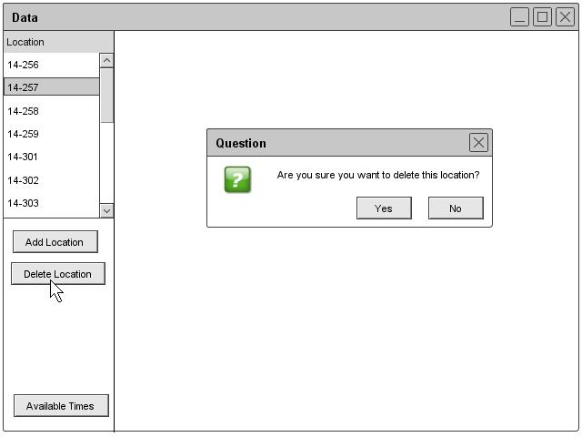

Section 2.3.3.3: Removing a Location
The administrator can remove a room by clicking the Remove button under the room heading of the Schedule drop down. The Scheduler tool displays a list of rooms. The administrator clicks on the one that needs to be deleted and then a prompt appears that says "Are you sure you want to remove the room from the database?" The administrator can click the Ok and the database deletes the data. Figure 35 illustrates the remove location prompt.

Figure 35: Remove Location Dialog
prev: edit-location | next: advanced-schedule-generation-and-editing | up: room | index: index